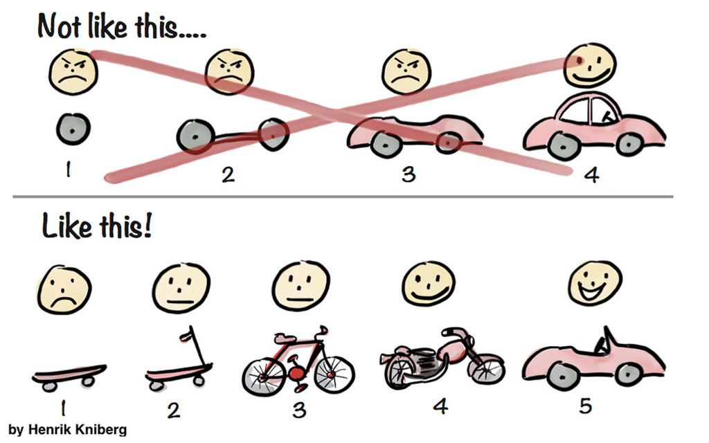

Introducción a Scrum
Introducción a Scrum
¿Qué es Scrum?
Scrum es un marco que permite el trabajo colaborativo entre equipos. Al igual que un equipo de rugby (de donde proviene su nombre) cuando entrena para un gran partido, scrum anima a los equipos a aprender a través de las experiencias, a autoorganizarse mientras aborda un problema y a reflexionar sobre sus victorias y derrotas para mejorar continuamente.
Normalmente son los equipos de desarrollo de software los que utilizan con mayor frecuencia Scrum, pero sus principios y lecciones se pueden aplicar a todo tipo de proyectos en equipo.
Scrum incluye un conjunto de reuniones, herramientas y funciones que, de forma coordinada, ayudan a los equipos a estructurar y gestionar su trabajo. El objetivo es obtener mejores resultados cada vez, dándole agilidad al equipo, que mejora con cada experiencia, y la adaptación al cambio, al ser un proceso iterativo.
Reflexión
Al tratarse de trabajo en equipo, ¿consideráis que debemos dedicar tiempo a ver las ventajas de trabajar en equipo? ¿qué hace falta para que el alumnado trabaje bien en equipo?
Principios ágiles
Hoy en día definimos la filosofía Agile como la capacidad de crear y responder al cambio de forma rápida, es una forma de llevar a cabo un proyecto de forma exitosa en un entorno incierto y en constantes cambios (Agile Alliance, 2015).
Los principios ágiles son un conjunto de valores y principios que se utilizan para guiar el desarrollo de software.
Los principios ágiles se basan en el Manifiesto Ágil, que fue escrito por un grupo de desarrolladores de software en 2001. El manifiesto ágil establece cuatro valores fundamentales y doce principios que se utilizan para guiar el desarrollo de software.
Valores
Los cuatro valores fundamentales del manifiesto ágil son:
-
Individuos e interacciones sobre procesos y herramientas: Los equipos ágiles valoran más a las personas y las relaciones entre ellas que a los procesos y las herramientas. Esto significa que los equipos ágiles se centran en la comunicación y la colaboración entre los miembros del equipo, en lugar de en los procesos y las herramientas que utilizan.
-
Software funcionando sobre documentación extensiva: Los equipos ágiles valoran más el software que funciona que la documentación extensiva. Esto significa que los equipos ágiles se centran en crear software que funcione y que sea útil para los usuarios, en lugar de en crear una gran cantidad de documentación.
-
Colaboración con el cliente sobre negociación contractual: Los equipos ágiles valoran más la colaboración con el cliente que la negociación contractual. Esto significa que los equipos ágiles trabajan en estrecha colaboración con los clientes para entender sus necesidades y crear software que satisfaga esas necesidades, en lugar de centrarse en la negociación de contratos.
-
Responder al cambio sobre seguir un plan: Los equipos ágiles valoran más la capacidad de responder al cambio que seguir un plan. Esto significa que los equipos ágiles se centran en ser flexibles y adaptarse a los cambios en lugar de seguir un plan rígido.
De estos valores surgen los doce principios del manifiesto ágil.
Para realizarlos de forma más genérica y aplicado a nuestro contexto educativo, los planteo adaptado al contexto general, y no solo al desarrollo de software:
- La prioridad es satisfacer al cliente (docente) a través de la entrega temprana y continua con valor.
- Aceptamos que los requisitos cambien.
- Entregamos frecuentemente, cuanto más frecuente mejor. Más retroalimentación y más frecuente.
- Los responsables de negocio (docentes) y los desarrolladores (alumnado) trabajamos juntos de forma cotidiana durante todo el proyecto. Todas las personas implicadas tiene los mismos objetivos e interactúan dia a dia.
- Los proyectos se desarrollan en torno a individuos motivados. Hay que darles el entorno y el apoyo que necesitan, y confiarles la ejecución del trabajo.
- El método más eficiente y efectivo de comunicar la información es cara a cara, o por lo menos síncrona.
- El producto que funciona es la medida principal del progreso. Esto hace referencia el profesorado conozca el trabajo realizado y funcionando (o que se adapte a los esperado).
- Los procesos ágiles promueven el desarrollo sostenible. Debemos ser capaces de mantener un ritmo constante que pueda ser seguido por todos.
- La atención continua a la excelencia técnica y al buen diseño mejora la agilidad. Este se refiere a cuidar los aspectos a la hora de realizar el trabajo.
- La simplicidad, o el arte de maximizar la cantidad de trabajo no realizado, es esencial. Se refiere a actuar de la forma más sencilla posible. Acciones que realmente aporten valor. No realizar trabajo innecesario.
- Las mejores soluciones emergen de equipos autoorganizados. Se les da la libertad para que tomen decisiones, y esto les hace estar más comprometidos y consiguen mejores resultados.
- A intervalos regulares el equipo reflexiona sobre cómo ser más efectivo para a continuación ajustar y perfeccionar su comportamiento en consecuencia. hace referencia a la idea de la mejora continua y aprender de los errores.
Pilares de Scrum
Scrum se basa en tres pilares fundamentales que son la transparencia, la inspección y la adaptación.
- Transparencia: Todos los aspectos del proceso deben ser visibles para todos los miembros del equipo. Esto significa que el equipo debe ser honesto y abierto acerca de su trabajo y de los problemas que puedan surgir.
- Inspección: El equipo debe inspeccionar regularmente su trabajo para identificar posibles problemas y oportunidades de mejora.
- Adaptación: El equipo debe adaptarse a los cambios en su entorno y en su trabajo. Esto significa que el equipo debe ser flexible y estar dispuesto a cambiar su forma de trabajar si es necesario.
¿Porqué emplear Scrum en el Aula?
Scrum por tanto se basa en realizar iteraciones cortas en las que se realizan entregas, llamadas Sprints, en las que se planifica, se ejecuta con equipos autoorganizados y se revisa el trabajo realizado buscando la mejora continua.
- Fomenta la autonomía y la responsabilidad. El alumnado se organiza y planifica su trabajo, asume responsabilidades y toma decisiones.
- Fomenta la colaboración y el trabajo en equipo. El alumnado trabaja en equipo, se apoya mutuamente y comparte conocimientos.
- Fomenta la creatividad, la innovación y el pensamiento crítico. El alumnado tiene la oportunidad de proponer soluciones y de experimentar con nuevas ideas.
- Fomenta la comunicación y la empatía. El alumnado aprende a comunicarse de forma efectiva y a ponerse en el lugar de los demás.
- Fomenta la adaptación al cambio. El alumnado aprende a ser flexible y a adaptarse a las circunstancias cambiantes.
- Fomenta la reflexión y la mejora continua. El alumnado reflexiona sobre su trabajo y busca maneras de mejorar.
- Fomenta la motivación y el compromiso. El alumnado se siente motivado y comprometido con su trabajo.
- Fomenta la responsabilidad y la toma de decisiones. El alumnado asume responsabilidades y toma decisiones sobre su trabajo. También al tomar decisiones de equipo trabaja la resolución de conflictos.
- Fomenta la empleabilidad. El alumnado adquiere habilidades que son valoradas por las empresas.
Roles en Scrum
Product Owner
Es la persona responsable de definir lo que se debe realizar a través de historias o requerimientos, priorizarlas y asegurarse de que el equipo de desarrollo conoce los requisitos del proyecto. El Product Owner es la persona responsable de maximizar el valor del trabajo del equipo de desarrollo.
Dentro del aula, el Product Owner es el profesorado.
El Product Owner debe estar disponible para el equipo de desarrollo para responder preguntas y proporcionar orientación.
Debe intentar proporcionar valor, y no cantidad. No debe intentar que el equipo haga más tareas, sino que haga las tareas que aporten más valor al proyecto. Definirá el producto mínimo viable, que es el producto que aporta más valor con el mínimo esfuerzo.
Scrum Master
Es el/la responsable de asegurarse de que el equipo sigue los valores y prácticas de Scrum. El/la Scrum Master es la persona responsable de ayudar al equipo a ser más efectivo y de eliminar los obstáculos que puedan estar impidiendo que el equipo tenga éxito.
Se trata de un/a facilitador/a, no de un/a “coordinador/a” o “jefe/a del equipo”. Es un miembro igualitario del equipo.
El Scrum Master puede ser inicialmente el/la docente, en equipos con poca autonomía. En equipos con mayor autonomía, el/la Scrum Master puede ser un alumno o alumna, y que sea el propio equipo el que decida quién es el Scrum Master.
Su principal objetivo debe ser que se cumpla el marco de trabajo Scrum: que se realicen las reuniones, que se cumplan los tiempos marcados para las reuniones, que este actualizado el tablero del equipo en el que mostramos el avance del producto, etc.
Equipo de Desarrollo
El equipo de desarrollo es el responsable de crear el producto. El equipo de desarrollo es un equipo autoorganizado y multifuncional que trabaja en estrecha colaboración con el/la Product Owner (docentes) para crear el producto. El equipo de desarrollo es responsable de determinar cómo se va a realizar el trabajo y de llevarlo a cabo.
Lo ideal son equipos de 4-6 personas, pero esto dependerá de las características del grupo y del proyecto a realizar.
Reflexión
¿Es aconsejable cambiar los equipos o mantenerlos? No se debe cambiar al equipo durante un proyecto. Normalmente es recomendable mantener el equipo estable durante todo el curso. Pero dependerá de cómo hayan trabajado o si hace falta más cohesión de la clase, a veces es recomendable cambiar el equipo para el siguiente proyecto.
Planificación y Ejecución de Sprints

En Scrum lo primero será detallar el trabajo que se debe realizar. Este trabajo lo dividiremos en iteraciones llamadas Sprints. En cada Sprint se planificará el trabajo que se debe realizar, se ejecutará el trabajo, y se revisará el trabajo realizado. Y así repetiremos el proceso hasta que el proyecto esté terminado.
Product Backlog (Lista de requerimientos)
El Product Backlog es una lista de todas los requerimientos que se deben realizar para completar el proyecto. El Product Owner (docente) es el responsable de mantener el Product Backlog actualizado y de priorizar los requerimientos en función de su importancia. Es una lista dinámica, y se va actualizando a lo largo del proyecto.
Será el primer paso en nuestro proyecto. El/la docente deberá definir las historias de usuario o requerimientos que se deben realizar para completar el proyecto.
Una historia de usuario es una descripción de una funcionalidad que se debe implementar en el proyecto. Se escriben en un lenguaje sencillo y se centran en las necesidades. Por ejemplo, una historia de usuario podría ser: “Como usuario, quiero poder iniciar sesión en la aplicación para acceder a mi perfil”.
“Como [perfil], [quiero] [para].”
El/la docente, ejerciendo su papel de Product Owner, es la persona que debe priorizarlas.
Este listado se irá actualizando a lo largo del proyecto, añadiendo nuevas historias, modificando las existentes, o eliminando aquellas que ya no sean necesarias.
Cada historia de usuario puede tener:
- Nombre
- Descripción: en forma de historia de usuario
- Prioridad
- Estimación de esfuerzo
- Criterios de aceptación: ¿qué debe cumplir para que se considere terminado?.
No es necesario escribir las historias de usuario con este formato. Se puede hacer una lista de requerimientos cómo mejor se adapte a la forma de trabajar del equipo.
Reflexión
En metodologías basadas en proyectos, ¿cúal es el primer paso que se debe realizar? ¿Por qué es importante?¿Veis alguna similitud con el Product Backlog?
Sprint
El Sprint es el corazón Scrum. Un sprint es un periodo de tiempo en el cuál se deben lograr una entrega que proporcione valor, utilizando todos los materiales y recursos que se ponen a disposición del equipo.
El Sprint tiene una duración fija, que suele ser de entre 1 y 4 semanas. Durante el Sprint, el equipo trabaja para completar los requerimientos que se han seleccionado del Product Backlog.
Reuniones de Scrum
Scrum define las reuniones que se deben realizar, indicando, cuándo se deben realizar, quién debe asistir y qué se debe hacer en cada reunión.
Reunión de planificación o Sprint Planning
A esta reunión que se realiza al principio de cada iteración o Sprint, debe asistir el equipo al completo: el Product Owner, el Scrum Master y el equipo de desarrollo.
¿Qué vamos a acabar en este Sprint? Es el objetivo del Sprint. El Product Owner debe explicar qué es lo que se espera que se entregue al final del Sprint, y priorizar lo que es más importante.
El equipo de desarrollo, junto con el Product Owner, selecciona los requerimientos del Product Backlog más prioritarias que considera va a poder realizar en el Sprint, y se planifica cómo se van a realizar. Debe estar claro que día va a finalizar el Sprint, y NO se debe modificar.
Para ver cuántas tareas se pueden realizar en un Sprint, hace falta saber cuántas personas hay en el equipo y cuánto tiempo se va a trabajar en el Sprint, si a tiempo completo, al 20% o al 50%.
El Scrum Master debe asegurarse de que el equipo entiende lo que se espera de ellos y de que tienen todo lo que necesitan para completar el trabajo. Debe asegurarse de que todo el equipo sale de la reunión sabiendo cuáles son las tareas que se deben realizar en el Sprint. Se pueden asignar que tareas va a realizar cada uno en esta reunión, pero no es necesario. Lo que si se debe hacer es estimar el esfuerzo que va a suponer cada tarea. Esto se puede hacer con la técnica de Poker Plan, que veremos más adelante.
El Product Owner debe resolver preferiblemente en este momento las dudas que surjan sobre las tareas que se van a realizar.
Para que la planificación del Sprint sea efectiva, es importante desglosar las tareas en tareas más pequeñas, que se puedan realizar en un día, o máximo dos. También es importante saber si hay condicionantes, es decir, si para empezar una tarea debe estar terminada otra. Esto lo puede indicar el Product Owner, o lo puede indicar el equipo de desarrollo.
Reflexión
Entonces, ¿no explicamos nada de los contenidos en clase?¿Cuándo debemos explicarlos?
Reunión diaria (Daily Scrum)
Tiene los siguientes objetivos:
- Comentar el trabajo realizado desde la última reunión.
- Definir el trabajo que se va a realizar hasta la siguiente sesión.
- Identificar los posibles problemas que hayan surgido.
NO debe durar más del tiempo establecido, pero si puede durar menos. En Scrum dicen que son 15 min, pero en el aula dependerá del tiempo que tengamos de la sesión. Pensad que si son sesiones de 55 minutos, no puede durar más de 10 minutos.
Es responsabilidad del Scrum Master que no se pase de ese tiempo.
Se recomienda hacerla en el mismo lugar y a la misma hora.
En esta reunión cada miembro del equipo debe responder a tres preguntas:
- ¿Qué he hecho desde la última reunión?
- ¿Qué me comprometo a hacer hasta la próxima reunión?
- ¿Hay algún problema que me impida avanzar?
No se trata de debatir ni aclara requerimientos, que ya deberían estar aclarados.
El Scrum Master es el responsable de informar de las acciones que ha realizado, y el estado en el que se encuentran, acerca de la resolución de los problemas que se han detectado en la reunión anterior.
Ventajas
- Mejora el conocimiento del estado del proyecto, y la comunicación entre los miembros del equipo.
- Fomenta cierta competitividad, ya que se establece un compromiso con el resto del equipo, y nadie quiere decir que no ha avanzado nada.
- Ayuda a generar vínculos con los miembros del equipo.
- Conseguimos que los miembros del equipo a los que les cuesta más hablar, se vayan soltando.
Revisión del Sprint (Sprint Review)
Es el momento en el que el Product Owner valida el trabajo realizado por el equipo. Se debe mostrar el trabajo realizado, y el Product Owner debe validar que cumple con los requisitos que se habían establecido. Para ellos se ayudará de los criterios de aceptación que se habían establecido en el Product Backlog.
Deben venir todos a esta reunión, el Product Owner, el Scrum Master y el equipo de desarrollo. También pueden venir invitados, como otros profesores, o incluso el alumnado de otros equipos. O personas interesadas, que vayan a utilizar el producto.
El Product Owner puede proponer mejorar o rectificaciones. Esto va a modificar la lista de tareas pendientes o nuevos requerimientos.
Las ventajas de esta reunión son:
- Permite al equipo mostrar su trabajo
- El equipo obtiene feedback del Product Owner
- El Product Owner detecta desviaciones entre lo que deseaba obtener y lo que le muestran
- Permite prepara la replanificación del proyecto con la máxima información posible.
Lista de incremento de producto
Se puede tener una lista con todas las tareas finalizadas. Es el Product Owner quien se encarga de mantenerla actualizada, y decidir si se da por terminada una tarea o no.
Retrospectiva del Sprint (Sprint Retrospective)
El objetivo es autoevaluar la forma de trabajar. Se habla de la forma en la que el equipo ha actuado, de cómo ha afrontado los problemas, y de cómo debería haberlos afrontado.
Es altamente recomendable hacerlo después de cada Sprint, pero no es obligatorio cuando se hacen Sprint de una semana y nos falta tiempo. Se puede hacer después de varios Sprints, pero no es recomendable hacerlo después de más de 3 Sprints.